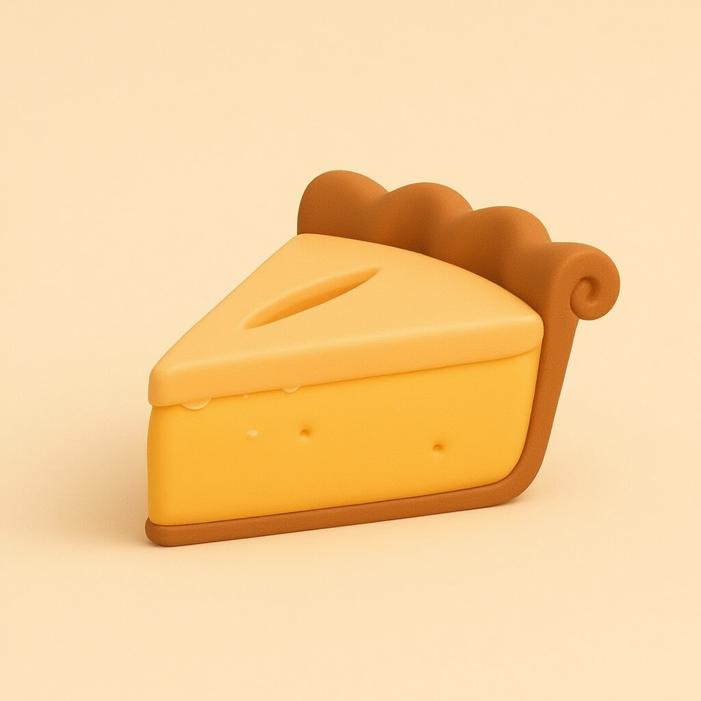
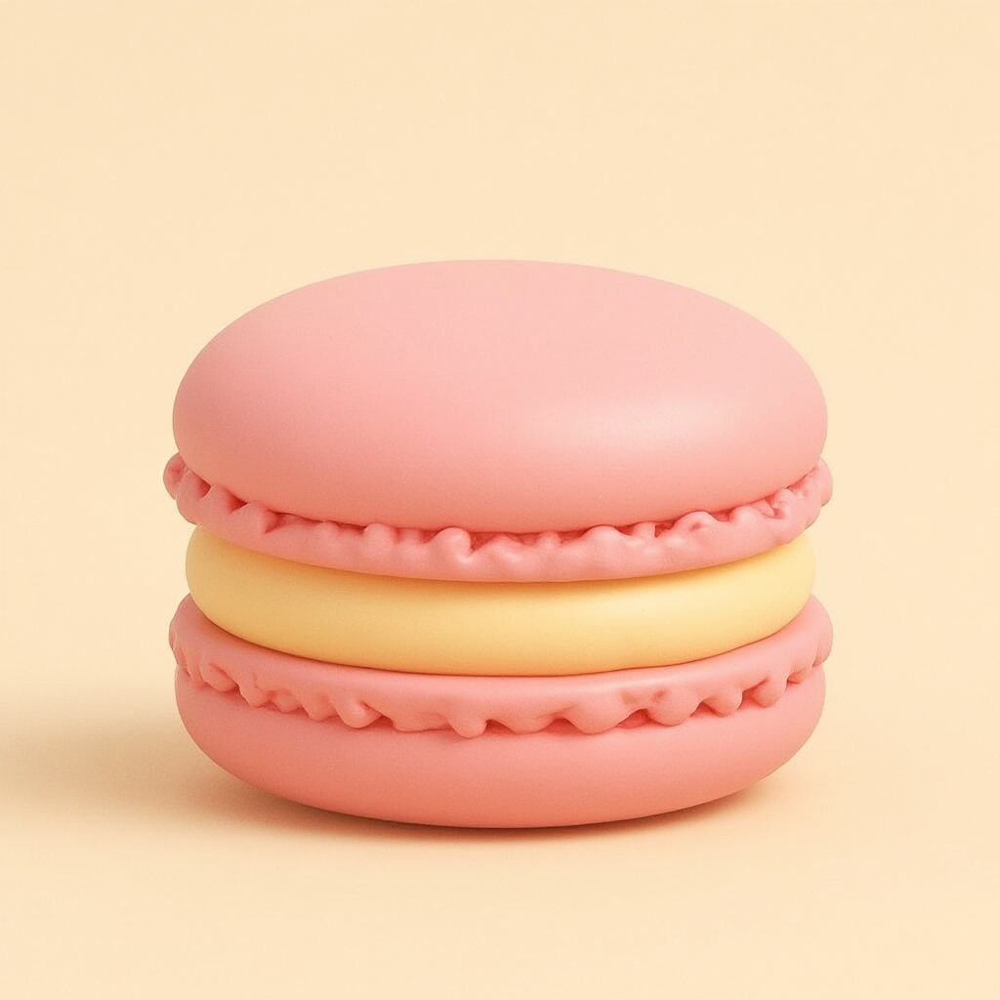
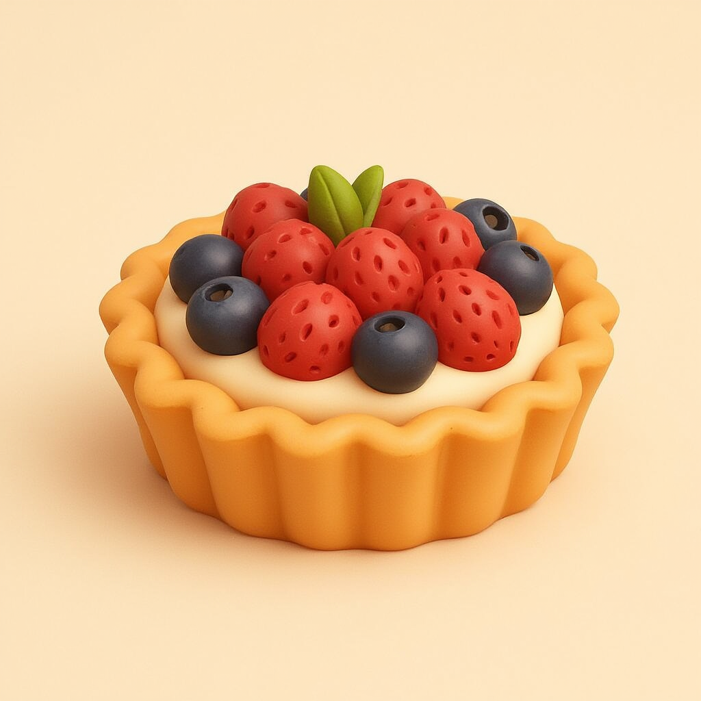
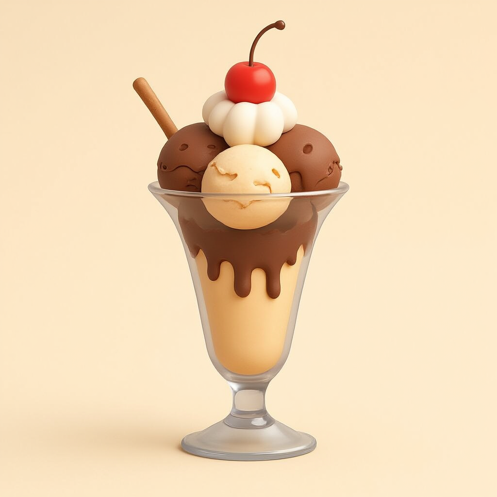
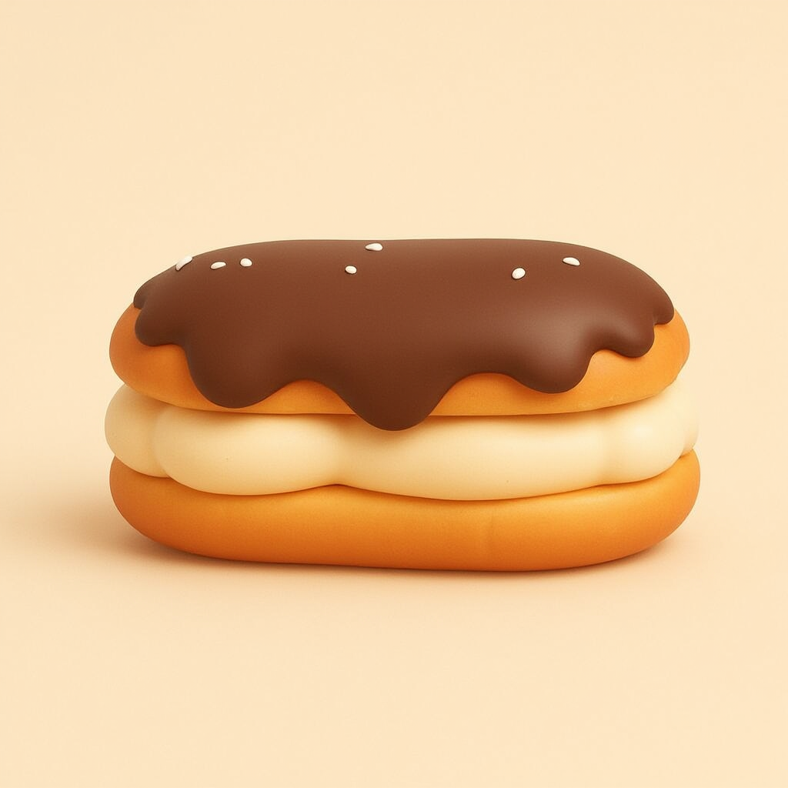
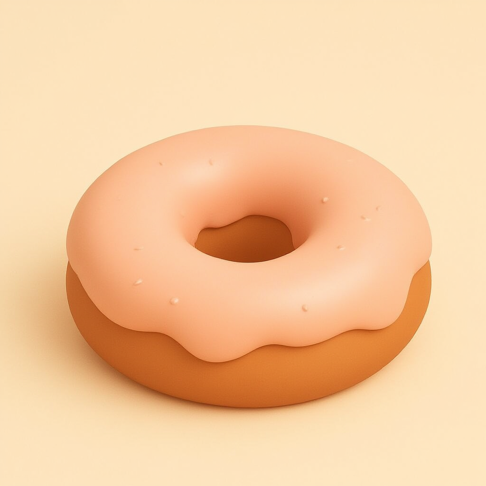
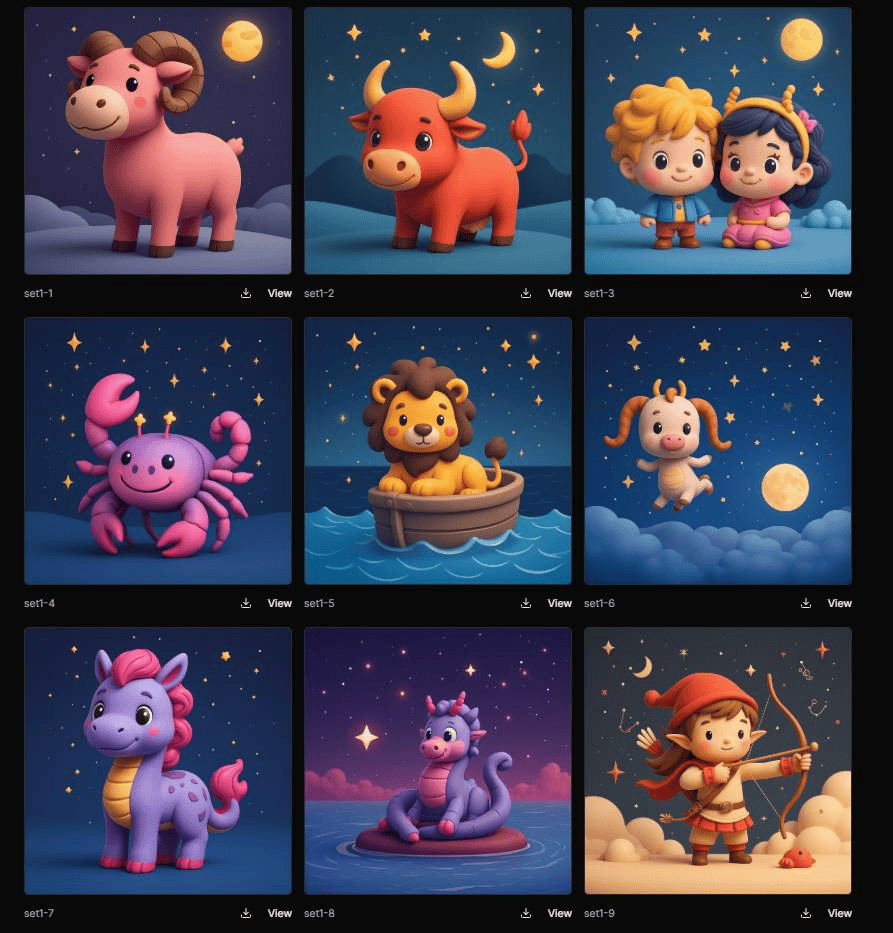

Batch Image Generation App
Generating hundreds of images from a single input
while maintaining consistency and brand identity






Role
- Architected ComfyUI node workflows
- Art direction and managed model fine-tuning
- Defined UX direction
Cross-functional
project team
Game Owner, Art Director, Backend and DevOps Engineers
Target users
2D Artists
The challenge
Designing a “one-stop shop” batch processing app with a single input that automates both prompt and image generation, while keeping results consistent across hundreds of assets and avoiding prompt fatigue
Interaction flow
-
Simple Input
Collection name, additional context (optional), style selection with a LoRA, number of assets and background removal
-
Automated Prompt Expansion and Review
The backend LLM expands a single subject input into a structured batch prompt list in a template fit for batch image generation in ComfyUI
The user can change, edit or re-generate the prompts
-
Batch Image Generation
A ComfyUI workflow is triggered: batch image generation with Flux
-
Interactive Asset Curation
The generated assets are returned for review in a responsive grid, allowing the user to select specific assets for re-generation
-
Export and Asset Handoff
Bulk export with control over naming convention, size and dimensions

Bottlenecks and limitations
Running a large batch image generation workflow requires high-VRAM GPU cloud infrastructure with extended server timeout and a data storage solution.
Batch Image Generation App
Hundreds of on-brand assets from a single input
The challenge
Generating a new collection of 150 assets every month, with every asset held up to the brand’s standard.
Generating hundreds of new prompts and assets one by one in ChatGPT was tedious and inefficient, and the art direction was limited to ChatGPT’s generic style. The process covers both prompt generation and image generation.
The team needed a simple, user-friendly one-stop shop that could turn a single input into hundreds of assets, keep every one of them consistent and offer different art direction options.
System architecture
The generative AI workflow is designed and run in ComfyUI.
Model fine-tuning (LoRA training) with AI Toolkit.
The frontend app was designed and built with Claude Design and Claude Code.
-
Simple Input
- Single subject input
- Collection name
- Additional context (optional)
- Style selection with a LoRA
- Number of assets
- Background removal option
-
Automated Prompt Expansion
- Backend LLM expands the subject into a structured batch prompt list
- Uses a template suitable for batch image generation in ComfyUI
-
Review Batch Prompts
- User reviews the prompt list
- Edit individual prompts or regenerate prompts
-
Batch Image Generation
- A ComfyUI workflow for batch image generation with Flux is triggered
-
Interactive Asset Curation
- Return generated assets for user review in a responsive grid
- Select specific assets for regeneration, then review the returned results
-
Export and Asset Handoff
- Bulk export the asset collection
- Control the naming convention, export size and dimensions
Models
- FLUX.1 [dev]
- Image generation with style LoRAs
- GPT-4o
- LLM that expands one subject into a full list of prompts
- RMBG-2.0
- Background removal
Human in the loop
The artist sets the brief and controls the result. The workflow handles the volume.
The brief comes from the artist. Every batch starts from a collection name, context and an approved style
Prompts can be reviewed before generation. The artist can edit or regenerate any prompt before anything is rendered
People choose the results. The artist reviews the grid, keeps what works and regenerates only the assets that miss
Enablement and support
The app reduces the whole process to one short form, a review grid and an export button, so any 2D artist can produce a full collection on their own.
Users
2D artists
Team
Game Owner, Art Director, Backend and DevOps Engineers
Limitations
Large batches need high-VRAM cloud GPUs, an extended server timeout and storage for the generated files.